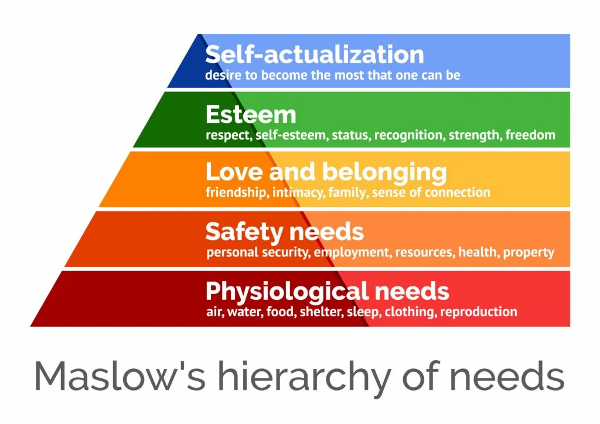

What exactly are human needs?
Some examples of human needs are:
- Safety needs
- Physiological needs
- Esteem
- Self actualisation
- Love and belonging
These are called the Maslow’s hierarchy of needs.
But on the other hand, you should know some examples of 'wants' ehich are:
- Electronics
- Entertainment
- Vehichles
- Holidays
- Materialistic items (e.g. luxury goods)
Some of these can be debated as the world progresses. An example of this was the use of face masks during the Covid-19
pandemic in which masks were needed to contain the spread but pre pandemic, very few people actually needed them.
Watch the following video for further detail

Back